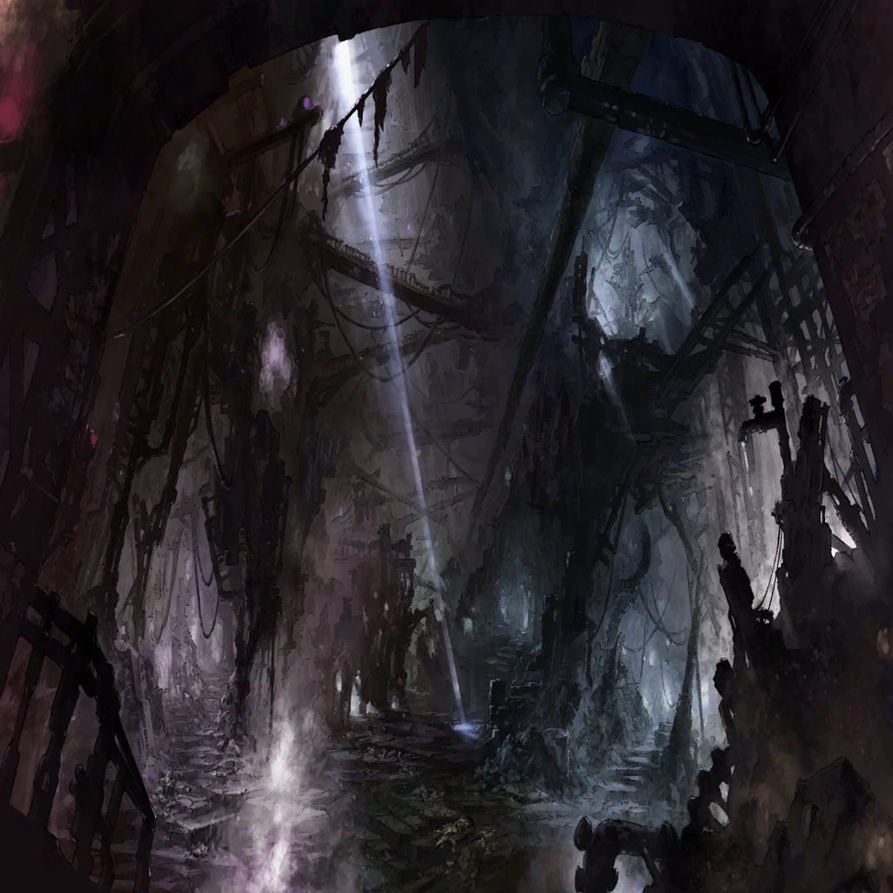

|
 |

カヤ |
唐変木（とうへんぼく） |

ザイン |
これだけの力がありながら…！ |
カヤ |
鈍感 |
ザイン |
な、何を怒ってるんだ…!? |
カヤ |
鈍く…ならざるを得ないのかな
ロードマスター様は
世界のすべてを抱えようとして |
ザイン |
俺はいつだって繊細に
つぶさに世界を見ている…！ |
カヤ |
そう言い切れるのがもう、ソレだよ
世界は広いよ？ 歴史は深いよ？ |
ザイン |
… |
カヤ |
だから私は、辞めるの |
ザイン |
…お前も、何も言ってはくれないのか |
| 遺書 |
『何も言わずに』 |
カヤ |
…………言いたくないことだって
あるじゃない |
ザイン |
… |
| 遺書 |
『何も言わずに、“君”は』 |
ザイン |
…っ!? |
カヤ |
…ザイン？ |
ザイン |
…………どうして |
カヤ |
ザイン？ |
ザイン |
なぜ、“君”が―――― |
| “君” |
…――――!? |
ザイン |
“君”は…………!! |
カヤ |
待って!! |
ザイン |
行かせてくれ |
カヤ |
何を見たの？ |
ザイン |
確かめるだけだ |
カヤ |
ダメ
その先は、ダメ |
ザイン |
…カヤ？ |
カヤ |
行かないで |
ザイン |
何がある…？ この先に
ただ…地下のスラムへ降りる道が… |
カヤ |
わからなくて、いいんだよ
この先に何があるか |
ザイン |
…？ |
 |
カヤ |
私も、このスロウスシュタインの歴史を
掘っていく内に、わずかに得られた情報で
やっとわかったぐらい |
 |
カヤ |
光の届かない海底街
地図の上では“存在しない”地下世界 |
|
カヤ |
ロストブルー |
 |
カヤ |
そこに生きるのは
表社会では生きられない犯罪者や
身寄りのない戦災孤児… |
カヤ |
もはや失う物などない浮浪者など…
死人同然の者が最後に流れ着くところ |
カヤ |
世界から
“いないもの”とされた人たちの場所 |
 |
カヤ |
私は、そこに踏み込もうとして
ストーカーさんたちに狙われた。何度も |
ザイン |
…！
あの時、俺に護衛を依頼したのも
ここのせいか |
カヤ |
なぜロードマスターにすら
その存在が語り継がれてないと思う？ |
ザイン |
…!? |
カヤ |
考えて。その意味を |
ザイン |
…それなら、尚更だ |
カヤ |
ザイン |
|
ザイン |
見て見ぬフリをするのか？
皆が触れないからといって |
カヤ |
ザイン |
ザイン |
建前なんかじゃない
俺は、世界を照らす。どこであっても |
カヤ |
…ウソばっかり |
|
ザイン |
…………どこに行ったんだ |
ザイン |
“君”は |
| ？？？ |
迷子か？
オニーサン |
ザイン |
？ |
| ユヴェン |
イイ服着てるぜ。アンタ |
ザイン |
…人を、捜している |
| ユヴェン |
へえ |
ザイン |
…いなくなった女性を |
| ユヴェン |
元カノ？ |
ザイン |
… |
| ユヴェン |
こんなドン底のスラムで？
捜して？ 見つけて？ どうすんだ？ |
ザイン |
もちろん、救い出す |
| ユヴェン |
アンタいいヤツだなあ |
ザイン |
そ、そうか？ |
| ユヴェン |
照れるなよ |
ザイン |
褒めるなよ |
| ユヴェン |
この辺のことについては
ちょっと詳しいんだ
良ければ力になるぜ |
ザイン |
ほ、本当か…!? |
| ユヴェン |
ちょーど仕事帰りでさ |
| ユヴェン |
俺ン家、来なよ |
|
カヤ |
…………行かせちゃった |
カヤ |
… |
カヤ |
言ってよ、本音 |
| ？？？ |
誰が君を
そんなに気落ちさせているのかな |
カヤ |
…これはこれは |

ワギナオ |
息災かな？ |
カヤ |
これはこれはこれは |
ワギナオ |
案外悪くないね
気楽な旅というのも |
カヤ |
ワギナオ主教猊下 |
ワギナオ |
君に共感するよ |
カヤ |
綺麗な顔をしていらっしゃる
外でお顔をさらすとは |
ワギナオ |
皆の前でもない
聖教会の人間としての
体裁を繕う必要もなくてね |
ワギナオ |
これは
頼みごとをする為の誠意
と思ってもらいたいな |
カヤ |
頼みごと
私の慰留の為にわざわざ…
ロードマスターが頼りないから |
ワギナオ |
あの優しさが魅力でもある |
カヤ |
確かに |
ワギナオ |
…これ以上の
遺跡調査・歴史への深入りはやめないか |
カヤ |
お気遣い痛み入りますが… |
ワギナオ |
度々襲撃を受けていると言うじゃないか |
ワギナオ |
聖教騎士団には一枚岩でいてもらいたい
このようなことを繰り返していては
いずれ君も欠けてしまう。ザインも悲しむ |
カヤ |
スラムに近づく度に
襲ってくる、敵… |
ワギナオ |
恐らくはロストブルーの者だろう
よほど探られて痛い腹があると見える |
カヤ |
なるほど |
ワギナオ |
まてまてまてまて |
カヤ |
であれば私が早急に
ロードマスターを連れ戻し
ロストブルーを去りましょう |
ワギナオ |
なるほど…頼めるか |
カヤ |
…主教猊下
僭越ながら私からも頼みごとが |
ワギナオ |
言ってみよ |
カヤ |
辞表を、取り消していただけますか |
ワギナオ |
…いつものことだな |
カヤ |
御面倒をおかけして |
ワギナオ |
喜んで頼まれよう |
カヤ |
綺麗な顔で頼まれましたら、もう |
ワギナオ |
君には負けるよ |
カヤ |
いやいやご謙遜を |
ワギナオ |
いやいや滅相も |
| カヤ・ワギナオ |
いやいやいや |
|  |
ザイン |
…………………… |
ザイン |
ここが |
| ユヴェン |
ようこそ
世界の肥溜めへ |
| |
追憶
地下世界・ロストブルー |
| ユヴェン |
で？ 誰を捜してるって？ |
ザイン |
… |
| ロストブルー民Ａ |
おォい、ユヴェン
今日の獲物はソイツかァ？ |
| ユヴェン |
くっせぇな。近寄んな |
ザイン |
ユヴェン？ |
| ユヴェン |
俺の名前
いいだろカッケえだろ |
| ロストブルー民Ａ |
へ、へへ、ユヴェンんん
くれよ。ソイツぅ |
ザイン |
ハメたのか |
| ユヴェン |
ハマったのはアンタじゃないの？ |
| ロストブルー民Ｂ |
何日も食ってねえんだァ
なんでも構わねえ、くれよお |
| ロストブルー民Ｃ |
高く売れそうなモン持ってんじゃねえか
いい獲物だあなぁぁ…！ |
ザイン |
待て…俺に戦う意思はない！
俺は、ただ…………!! |
ザイン |
無駄だ
退いてくれ |
| ユヴェン |
しびれるな |
ザイン |
！ |
| ユヴェン |
俺の獲物はこいつらだ
今日の食いブチっ。さー物色物色 |
ザイン |
…！
俺をエサに…！ |
| ユヴェン |
目立ちそうだったからさ、アンタ
あいつらが襲ってきたところを
正当防衛、ってヤツだ |
ザイン |
… |
| ユヴェン |
無駄だよ。アンタこそ |
ザイン |
え？ |
| ユヴェン |
対話にもならない
こいつらなんかとじゃ |
| ユヴェン |
金目になりそうなもんは奪う
食えそうにないもんも食う
殺せそうなヤツは殺す。そんなんなんだぜ？ |
ザイン |
礼は、言っておこう…
俺は―― |
| ユヴェン |
いーよアンタが何者かなんて |
| ユヴェン |
身なりがイカす
それだけでいい |
ザイン |
… |
| ユヴェン |
でもさ、どうやって救う？
その、元カノさん？ |
ザイン |
…こんなところからは連れ出して |
| ユヴェン |
俺の寝床をバカにするかね |
ザイン |
あ、いや、そういうつもりは、すまん |
| ユヴェン |
その女と、どんな縁があるのかは知らないが
ロストブルーにいる以上
救われてンじゃないの？ そのヒト |
ザイン |
…？
お前の言葉を借りれば
ここは“世界の肥溜め”なんじゃないのか？ |
| ユヴェン |
そう。ロストブルーは光届かぬ海底の世界
世の中から忘れ去られた地
望んで来るヤツは稀だろうな |
| ユヴェン |
けど、ここにいるヤツは
ここでしか生きていけないヤツだ
だが、“ここでなら”生きていける |
| ユヴェン |
そういう救いがある
奪ってもいい、泥をすすってもいい
誰にも言えない罪や秘密を抱えていても… |
| ユヴェン |
追及するヤツなんていない
ホッとするヤツもいるのさ |
ザイン |
触れられたくないこともあると |
| ユヴェン |
まーね |
ザイン |
お前はどうなんだ。ユヴェン |
| ユヴェン |
俺？ |
ザイン |
お前とはこうして“対話”できている
言葉を尽くして、俺に教えてくれている |
ザイン |
お前も、救われたいとは思わないのか？ |
| ユヴェン |
…どうだろうな |
ザイン |
俺は、救えるのなら、すべてを救いたい
諦めず、すべてを照らしたい |
| ユヴェン |
…アッツいね～
まるで昇りくる太陽だ
ライジング・サン |
ザイン |
茶化すな |
| ユヴェン |
さっきの敵も
この地もすべてを照らすって？
不可能だろ |
ザイン |
だからせめて、すべてに言葉を尽くしたい |
| ユヴェン |
…言葉・対話ね。いいな
気に入ったよ、アンタ |
| ユヴェン |
…………そーゆートコロに惚れたクチ？
お前も |
ザイン |
？ |
| ユヴェン |
隠れてないで、出て来いよ |
ザイン |
…!! |
| ユヴェン |
照れるなよ。元カレだろ？
ずっと見てたもんな？ |
| 遺書 |
『“君”の言葉がやっと聞ける
そう思った』 |
ザイン |
…………
あー、言葉が出ないな。ははは |
| “君” |
… |
ザイン |
どうして、ここに？
あれからどうしていたんだ？ |
| “君” |
………… |
ザイン |
頼む、なんでもいい
何か教えてくれ |
| 遺書 |
『しかし“君”は
喉を押さえるばかり』 |
| “君” |
――…！ |
| 遺書 |
『“君”の口から出る言葉は
音にならなかった』 |
ザイン |
…？ |
| ユヴェン |
対話は、できそうか？ |
ザイン |
こ、声が――…？ |
| 遺書 |
『裂かれた傷痕が残る喉元から
“君”の声が聞こえることはなかった』 |
ザイン |
…どう、して |
| ユヴェン |
『ここにいる者たちは
私も含めて世界から捨てられた存在…
誰も私たちを救うことなどできません』 |
ザイン |
違う |
| ユヴェン |
『見て見ぬフリされてきたのに
突然救おうだなんて、ありがた迷惑です』 |
ザイン |
彼女はそんなこと考えていない |
| ユヴェン |
なぜそれがわかる？ |
ザイン |
…！ |
| ユヴェン |
言葉が、対話が第一だと言うなら
言葉が使えず対話できない彼女の存在は
真っ先に見捨ててしかるべきということだ |
ザイン |
違う！ |
| ユヴェン |
俺はさ。ごめんな
こんな言葉で悪いンだけど |
ザイン |
なんだ…!? |
| ユヴェン |
大嫌いなんだ
正義ヅラするヤツ |
ザイン |
…！ |
カヤ |
…帰ろ。ザイン |
| ユヴェン |
またパリッとしたお仲間だ
どこかのVIPが観光旅行か？ |
カヤ |
VIPだとしたら、お答えできないね |
| ユヴェン |
そりゃそうだ |
ザイン |
……………… |
カヤ |
さ、早く |
ザイン |
……………… |
| ユヴェン |
行こうぜ。元カノさん |
ザイン |
俺は |
| “君” |
…？ |
ザイン |
俺は、見捨てはしない
ここも、照らしてみせるから |
| “君” |
………… |
| ユヴェン |
…暗いツラして言うなよ |
カヤ |
騎士道バカ |
ザイン |
…ああ |
ザイン |
バカだ。俺は |
 |

オーティマ |
恋かな？ |
ザイン |
バカだ…俺は…！ |
オーティマ |
恋かな？ |
| |
追憶
ノーザンブライド・聖教騎士団本部 |
ザイン |
オーティマ…
口がきけない者に言葉を尽くすには
どうしたらいい？ |
オーティマ |
口がきけない？ |
ザイン |
その者と対話をはかり
照らしてやるには…どうしたらいいんだ？ |
オーティマ |
…ああ、会話ができないってことです？
ウブだなあ |
ザイン |
方法が思いつかないんだ、何も…
なんたるバカだ…俺は |
オーティマ |
簡単じゃないですか |
ザイン |
なんだと…!? |
オーティマ |
文通でしょ。それ一択 |
ザイン |
文通…！ |
オーティマ |
恋文かな？ |
ザイン |
こ、ここ |
オーティマ |
なーんて、古いか。イマドキ
恥ずいっすもんねラブレター |
ザイン |
書くわけないだろう |
オーティマ |
ですよねー |
ザイン |
そんなもの、書くくらいなら死ぬ |
オーティマ |
大げさな |
カヤ |
いってきまぁーす |
オーティマ |
あ。辞表を受理されなかったカヤ様 |
カヤ |
恥ずかしながらっ
でもね、引き留められたあとから
給料が1.5倍 |
オーティマ |
やッばー
ワギナオ主教猊下直々の引き留めですもんね
うっらやましー |
カヤ |
オーティマも辞めてみる？ |
オーティマ |
んー、ちょっちまだ
その時期じゃないかなあ |
オーティマ |
上司が思春期みたいなんで |
カヤ |
ははー |
オーティマ |
ね、どうしちゃったんすか、ザイン様は |
カヤ |
温度が高いだけ。冷やかしてあげて |
オーティマ |
恋なのかなあ |
ザイン |
カヤ…お前、どこに行く？ |
カヤ |
もう一度
スロウスシュタインの遺跡を
調査しに行くつもりだけど？ |
カヤ |
大丈夫、団内のお仕事は片づけたから
なんたって給料が1.5倍だもの |
ザイン |
そうか…しばし、待ってくれ |
ザイン |
カヤ…これを |
カヤ |
…？
お手紙？ |
ザイン |
これを、ロストブルーまで届けてほしい |
カヤ |
…ん？ ええっ？（意味不明） |
ザイン |
オーティマの作戦だ |
カヤ |
作戦？ |
ザイン |
文通だ…！ |
カヤ |
文通？ |
ザイン |
会話ができない相手と対話するのであれば
これしかないと。オーティマが |
カヤ |
あ、ああ、あー |
ザイン |
お、オーティマが言ってたんだ |
カヤ |
えーと？
キミの恋文を？
私に届けさせようって？ |
ザイン |
こ、恋文ではない |
カヤ |
ハァー… |
ザイン |
ただ、これはぁ、ただの、仕事で、だなぁ |
カヤ |
ハアァー… |
ザイン |
…バカだから、これくらいしか |
カヤ |
…………ホントね。朴念仁 |
カヤ |
…宛名すら書いてない |
|
| ユヴェン |
古風だね～、やり口が |
カヤ |
お届け物です
彼女宛ての |
| “君” |
…………！ |
| ユヴェン |
あの正義ヅラ当人はどうした？ |
カヤ |
ボーイフレンドは
思春期をこじらせてます |
| |
追憶
ロストブルー |
| ユヴェン |
宛名はどうしたら？ |
カヤ |
え…？ |
| ユヴェン |
お返事の宛先は？ |
カヤ |
…“空白”でどうぞ
渡す相手は決まってるから |
| ユヴェン |
“空白”ね。どうも |
カヤ |
キミが見るの？
覗きだなんて悪趣味 |
| ユヴェン |
元カノさんは受け取り拒否だそうで |
| “君” |
… |
| ユヴェン |
配達料金くらい、もらおうぜ |
カヤ |
…それもそうね |
| ユヴェン |
それもそうだろ？ |
| ユヴェン |
『拝啓 微笑みを忘れた君へ』 |
| ユヴェン・カヤ・“君” |
………… |
| ユヴェン |
『笑っているかい？』 |
| ユヴェン |
『君は今、太陽の光の届かぬ海底で
笑っているかい？』ちょ、もう、待って
もう、俺ムリだわ、これダメ読めないわ |
カヤ |
…『一度たりとも
君のことを忘れたことなどないよ
俺の心はNever Forget You』… |
| “君” |
―― |
カヤ |
…何を読まされているの私は？ |
| ユヴェン |
熱烈だな |
| “君” |
… |
| ユヴェン |
お返事は？ どうする？ |
|
カヤ |
…『君は、それでも笑わなかった』 |
カヤ |
『君が何を思っているのか知りたい
君の言葉を聞かせてくれないか
あの時の約束は、まだ果たされていない』 |
カヤ |
『君は俺を照らしてくれた
だから、俺も君を照らしたかった』 |
カヤ |
…………『どうして、いなくなった』…？
『何も言わず、君は』――…？ |
|
ザイン |
『拝啓 “空白”殿』 |
ザイン |
…空白殿？ |
カヤ |
あッ、宛先に書いちゃうんだ
“空白”って |
| |
追憶
ノーザンブライド・聖教騎士団本部 |
カヤ |
で。お返事の続きは？ |
ザイン |
…………『熱烈な恋文をありがとう』 |
ザイン |
いや、恋文というわけではなく…
なんというか、俺の、正直な気持ちというか |
カヤ |
『こちらの気持ちとしては…』 |
ザイン |
え、もう本題!?
待て、カヤ、読むの待て！ |
カヤ |
『たかだがどこぞのVIP様が
どのように照らしてくれるのか知りたいな』 |
カヤ |
『俺や、この暗闇の世界を』 |
ザイン |
ンッ!?!?!? |
ザイン |
『黒衣の男、ユヴェンより』…
…ん？ ユヴェン？ …ん？
…ゆヴぇ、ん？ |
カヤ |
…………ぷぷぅ～ |
ザイン |
ユヴェン…？ |
カヤ |
私が配達人
あの男ユヴェンが代理受取人 |
ザイン |
…え？ …じゃあ
手紙の、内容って…………？ |
カヤ |
ユヴェンが高らかに読み上げてたよ |
ザイン |
エ!?!?!? |
カヤ |
私も読んだ |
ザイン |
え!?!? |
カヤ |
ネヴァーフォーゲッチュー |
ザイン |
…あああああ
…………ああああああああああ
ああああああーーーーッッ!! |
カヤ |
バーカ |
 |

カノン |
明るいハナシ |
| |
現在
ノーザンブライド・書物蔵 |
カノン |
…………これが、“遺書” |
カノン |
――なわけ、ない
ザイン様の“遺言”だなんて… |
カノン |
ザイン様…アナタは、光だった |
カノン |
多くのものを照らしてきた…
ううん、今もなお照らし続けている |
カノン |
“正義”なんていう不確かなものを
“絶対”と言い切って… |
カノン |
“世界平和”なんていう
途方もない空想を追い続けて… |
カノン |
その重荷は…アナタと同じ立場になった私も
今はまだわからない…抱えきれません |
カノン |
アナタは、どうしていたんですか？
そんなアナタが…どうして―――― |
カノン |
…？
日記に、何か挟まってる… |
カノン |
栞（しおり）――…？ |
| 遺書 |
『“君”に出会ったのは
俺がロードマスターになる少し前のことだ』 |
| 遺書 |
『“君”の口数は、まだ多かった』 |